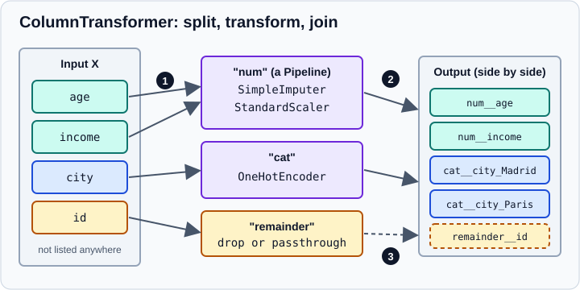

ColumnTransformer & Heterogeneous Data
|
This content was generated with the assistance of AI and should be verified against the official documentation before being relied on in production. |
Real tables are heterogeneous: numbers that need scaling, categories that need encoding, free text that needs a
vectoriser, identifiers that must be left alone. A single transformer cannot treat all of them correctly, and applying
transformers by hand to slices of a DataFrame and gluing the results together is exactly the kind of code that leaks
information and breaks at prediction time. ColumnTransformer solves this: it applies each transformer to its own
subset of columns, concatenates the results side by side and behaves as a single estimator that can sit inside a
Pipeline, be cloned, cross-validated and searched. This page targets scikit-learn 1.9 (1.9.1 at the time of writing)
with pandas 3.1 and NumPy 2.5, and was checked in October 2026. Examples target Python 3.13 or 3.14 and were run on Python 3.13. Every example was run with those versions
and the printed output is the real output. The surrounding Pipeline machinery is covered in
Pipelines; the individual encoders and scalers are covered in
Scaling & Transforming Features,
Encoding Categorical Features and
Imputing Missing Values. The conceptual side of encoding and scaling
choices is in Feature Engineering.
The idea

A ColumnTransformer is built from a list of (name, transformer, columns) tuples:
-
nameidentifies the step. It is the prefix used byget_paramsandset_params, by grid search (num__imp__strategy) and by default in the output feature names. -
transformeris any estimator withfitandtransform, a wholePipeline, or one of the strings"drop"and"passthrough". -
columnssays which columns of the input the transformer receives.
During fit, each transformer is cloned and fitted on its own columns. During transform, the same columns are cut
again, transformed and concatenated horizontally in the order of the list, followed by the remainder.
import pandas as pd
from sklearn.compose import ColumnTransformer
from sklearn.impute import SimpleImputer
from sklearn.pipeline import make_pipeline
from sklearn.preprocessing import OneHotEncoder, StandardScaler
df = pd.DataFrame({
"age": [25, 32, None, 51, 46, 29],
"income": [32000, 54000, 41000, None, 88000, 39000],
"city": ["Madrid", "Paris", "Madrid", "Rome", "Paris", None],
"plan": ["basic", "pro", "basic", "pro", "pro", "basic"],
"id": [1, 2, 3, 4, 5, 6],
})
numeric = make_pipeline(SimpleImputer(strategy="median"), StandardScaler())
categorical = make_pipeline(
SimpleImputer(strategy="most_frequent"),
OneHotEncoder(handle_unknown="ignore"),
)
ct = ColumnTransformer(
transformers=[
("num", numeric, ["age", "income"]),
("cat", categorical, ["city", "plan"]),
],
remainder="drop",
)
Xt = ct.fit_transform(df)
print(type(Xt).__name__, Xt.shape)
print(ct.get_feature_names_out())
print([name for name, _, _ in ct.transformers_])
print(ct.named_transformers_["cat"])Output:
ndarray (6, 7)
['num__age' 'num__income' 'cat__city_Madrid' 'cat__city_Paris'
'cat__city_Rome' 'cat__plan_basic' 'cat__plan_pro']
['num', 'cat', 'remainder']
Pipeline(steps=[('simpleimputer', SimpleImputer(strategy='most_frequent')),
('onehotencoder', OneHotEncoder(handle_unknown='ignore'))])
Four things are visible in this output. The column id was not listed anywhere, so it was dropped (the default).
The result is a NumPy array with seven columns: two scaled numbers and five one-hot columns, in the order of the
list. Every feature name carries the name of the transformer that produced it. And the fitted object keeps the
transformers in transformers_, which gains a third entry called remainder even when it drops everything, and in the
dictionary-like named_transformers_. Note also that the imputer sits inside each branch: the median and the most
frequent value are learned only from the training data passed to fit, which is what keeps preprocessing free of
leakage (see Common Pitfalls: Leakage & Randomness).
Choosing the columns
The third element of each tuple indexes the second axis of the input. The accepted forms are:
| Form | Meaning | Notes |
|---|---|---|
A list of strings, |
Columns by name |
Requires a DataFrame (pandas or polars) at |
A single string, |
One column by name, passed as a 1-D vector |
Needed by transformers that expect a 1-D input, such as |
Integers or a list of integers |
Columns by position |
Works for NumPy arrays and DataFrames; fragile if the column order changes. |
A slice, |
A range of positions |
Same caveat as integers. |
A boolean mask |
Columns where the mask is true |
One entry per input column. |
A callable |
A function that receives the input |
Evaluated at |
|
Columns chosen by dtype or by a name pattern |
Described below. |
A transformer that is the string "passthrough" copies its columns unchanged, and "drop" removes them. A column
name that does not exist in the data raises an error at fit.
The shortcut make_column_transformer builds the same object without names; scikit-learn names each step after the
lower-cased class of its transformer (standardscaler, onehotencoder). It takes the same keyword arguments:
from sklearn.compose import make_column_transformer, make_column_selector
from sklearn.preprocessing import OneHotEncoder, StandardScaler
ct = make_column_transformer(
(StandardScaler(), make_column_selector(dtype_include="number")),
(OneHotEncoder(), make_column_selector(dtype_include="object")),
)Automatic names are convenient, but they make parameter names such as columntransformer__onehotencoder__drop
longer and they collide when the same class is used twice, so prefer explicit names in code that will be searched or
maintained.
Selecting by dtype with make_column_selector
make_column_selector returns a callable that inspects a DataFrame and returns column names. It accepts
dtype_include, dtype_exclude and pattern. A column must satisfy all the given criteria. Selection by dtype is the
usual way to say "all numeric columns" or "all text columns" without listing them, and it adapts when the schema grows.
The next example also shows a transformer that needs a 1-D input and prints the selectors' results on a frame that uses the default pandas 3 string dtype.
import pandas as pd
from sklearn.compose import make_column_selector, make_column_transformer
from sklearn.feature_extraction.text import CountVectorizer
from sklearn.preprocessing import OneHotEncoder, StandardScaler
df = pd.DataFrame({
"age": [25, 32, 40, 51, 46, 29],
"income": [32000.0, 54000, 41000, 70000, 88000, 39000],
"city": ["Madrid", "Paris", "Madrid", "Rome", "Paris", "Rome"],
"plan": ["basic", "pro", "basic", "pro", "pro", "basic"],
"note": ["good value", "too expensive", "good", "great support", "expensive", "ok value"],
})
print(df.dtypes.to_dict())
print(make_column_selector(dtype_include="number")(df))
print(make_column_selector(dtype_include=object)(df))
print(make_column_selector(dtype_include="str")(df))
print(make_column_selector(dtype_include=["object", "string"])(df))
print(make_column_selector(dtype_exclude="number")(df))
print(make_column_selector(pattern="^(?:city|plan)$")(df))
ct = make_column_transformer(
(StandardScaler(), make_column_selector(dtype_include="number")),
(OneHotEncoder(sparse_output=False), ["city", "plan"]),
(CountVectorizer(), "note"), # a string, not a list: the column is passed as 1-D
remainder="drop",
verbose_feature_names_out=False,
)
Xt = ct.fit_transform(df)
print(Xt.shape)
print(list(ct.get_feature_names_out()))
print([name for name, _, _ in ct.transformers_])
print(ct.output_indices_)Output:
{'age': dtype('int64'), 'income': dtype('float64'), 'city': <StringDtype(na_value=nan)>, 'plan': <StringDtype(na_value=nan)>, 'note': <StringDtype(na_value=nan)>}
['age', 'income']
['city', 'plan', 'note']
['city', 'plan', 'note']
['city', 'plan', 'note']
['city', 'plan', 'note']
['city', 'plan']
(6, 14)
['age', 'income', 'city_Madrid', 'city_Paris', 'city_Rome', 'plan_basic', 'plan_pro', 'expensive', 'good', 'great', 'ok', 'support', 'too', 'value']
['standardscaler', 'onehotencoder', 'countvectorizer']
{'standardscaler': slice(0, 2, None), 'onehotencoder': slice(2, 7, None), 'countvectorizer': slice(7, 14, None), 'remainder': slice(0, 0, None)}
The pandas 3 str dtype is the point to remember. Code written before pandas 3 used
make_column_selector(dtype_include=object) for text columns. With pandas 3.1 and scikit-learn 1.9.1 that call still
returns the str columns, because the selection goes through DataFrame.select_dtypes, which treats the new string
dtype as a text dtype when object is requested. dtype_include="str" also works, and
dtype_include=["object", "string"] covers pandas 3 str, the "string" extension dtype and old object columns
at once; that list is the most portable spelling for code that must run on pandas 2 and 3. The selector will also
return genuine object columns that hold mixed Python objects, so check the result on real data. The pattern
argument is a regular expression applied with str.contains; a pattern that has capture groups triggers a pandas
warning, so use non-capturing groups ((?:...)) as above.
The output_indices_ mapping shows which slice of the output each transformer produced, which helps when you need to
post-process only one block.
What happens to the other columns: remainder
Columns not mentioned by any transformer are the remainder. The remainder argument controls them:
-
"drop"(default) removes them. This is the safest default because an identifier or a target accidentally left in the table does not reach the model. -
"passthrough"appends them unchanged after the transformed blocks, which is useful for columns that are already model-ready. -
An estimator is fitted on all remaining columns, as if it were one more transformer called
remainder. This needs every remaining column to suit the estimator and, as the API reference notes, the columns must be in the same order atfitandtransform.
The remainder is also the quiet source of two classic bugs. With "passthrough", a column you forgot to scale or
encode silently enters the model, and when the passthrough mixes numbers and strings the result becomes an object
array that most estimators reject. With "drop", a column you meant to use is silently ignored. Print
get_feature_names_out() after fitting to make the final feature set explicit.
Naming the output features
get_feature_names_out returns one name per output column. verbose_feature_names_out decides how transformer names
are used:
-
True(default) prefixes each name with<transformer name>__. -
Falseuses the names produced by the transformers, and fails if two output names are equal. -
A string with the fields
transformer_nameandfeature_name, or a callable of two arguments, builds custom names. The string and callable forms were added in scikit-learn 1.7.
The same example also covers remainder and the choice between dense and sparse output:
import numpy as np
import pandas as pd
from sklearn.compose import ColumnTransformer
from sklearn.preprocessing import OneHotEncoder, StandardScaler
df = pd.DataFrame({
"age": [25, 32, 40, 51, 46, 29, 38, 60],
"income": [32000.0, 54000, 41000, 70000, 88000, 39000, 52000, 91000],
"city": ["Madrid", "Paris", "Madrid", "Rome", "Paris", "Rome", "Madrid", "Paris"],
"id": range(8),
})
# remainder: drop, passthrough or an estimator
for remainder in ["drop", "passthrough"]:
ct = ColumnTransformer([("sc", StandardScaler(), ["age"])], remainder=remainder)
ct.fit_transform(df)
print(remainder, list(ct.get_feature_names_out()))
numeric_only = df.drop(columns="city")
ct = ColumnTransformer([("sc", StandardScaler(), ["age"])], remainder=StandardScaler())
ct.fit_transform(numeric_only)
print("estimator remainder:", ct.transformers_[-1][0], ct.transformers_[-1][2])
# feature names: prefixes, no prefixes, a format string
for verbose in [True, False, "{feature_name}@{transformer_name}"]:
ct = ColumnTransformer(
[("sc", StandardScaler(), ["age", "income"])], verbose_feature_names_out=verbose
).fit(df)
print(repr(verbose), list(ct.get_feature_names_out()))
ct = ColumnTransformer(
[("a", StandardScaler(), ["age"]), ("b", StandardScaler(), ["age"])],
verbose_feature_names_out=False,
)
try:
ct.fit(df)
ct.get_feature_names_out()
except ValueError as exc:
print("ValueError:", exc)
# sparse output
rng = np.random.default_rng(0)
many = pd.DataFrame({"zip": rng.integers(0, 200, 500).astype(str), "x": rng.normal(size=500)})
ct = ColumnTransformer([("oh", OneHotEncoder(), ["zip"]), ("sc", StandardScaler(), ["x"])])
out = ct.fit_transform(many)
print(type(out).__name__, out.shape, ct.sparse_output_)
ct.set_params(sparse_threshold=0)
print(type(ct.fit_transform(many)).__name__)Output:
drop ['sc__age']
passthrough ['sc__age', 'remainder__income', 'remainder__city', 'remainder__id']
estimator remainder: remainder ['income', 'id']
True ['sc__age', 'sc__income']
False ['age', 'income']
'{feature_name}@{transformer_name}' ['age@sc', 'income@sc']
ValueError: Output feature names: ['age'] are not unique. Please set verbose_feature_names_out=True to add prefixes to feature names
csr_matrix (500, 185) True
ndarray
Dense or sparse output
One-hot encoding a high-cardinality column produces a sparse matrix. ColumnTransformer stacks the blocks and returns a
sparse matrix only when the overall density of the result is lower than sparse_threshold (default 0.3); otherwise it
returns a dense array. The last lines of the example show 200 possible zip codes producing a csr_matrix with 185
columns, and sparse_threshold=0 forcing a dense array. When every block is dense the setting is ignored. After
fit, sparse_output_ tells you what was chosen. Two consequences matter in practice:
-
The output type can change between datasets, because the density depends on the data. Estimators that reject sparse input (
GaussianNBraises aTypeErrorfor sparse data) fail only for some data. Setsparse_threshold=0or useOneHotEncoder(sparse_output=False)when you need a stable dense array. -
pandas and polars output cannot represent the sparse result, so a pandas-configured transformer must produce dense data. See pandas & polars Output (set_output).
In a Pipeline: nested parameters and searches
A ColumnTransformer is an ordinary transformer, so it normally forms the first step of a Pipeline whose last step is
a model. Parameters of nested estimators are addressed with double underscores, one level per object: the step of the
pipeline, the transformer name, the step inside the transformer’s own pipeline, and the parameter. A transformer can also
be replaced as a whole through set_params, including by "drop" or "passthrough", which turns a branch off without
rebuilding the object. This makes preprocessing choices searchable like any other hyper-parameter.
import numpy as np
import pandas as pd
from sklearn.compose import ColumnTransformer
from sklearn.impute import SimpleImputer
from sklearn.linear_model import LogisticRegression
from sklearn.model_selection import GridSearchCV, cross_val_score
from sklearn.pipeline import Pipeline
from sklearn.preprocessing import OneHotEncoder, StandardScaler
df = pd.DataFrame({
"age": [25, 32, 40, 51, 46, 29, 38, 60],
"income": [32000.0, 54000, 41000, 70000, 88000, 39000, 52000, 91000],
"city": ["Madrid", "Paris", "Madrid", "Rome", "Paris", "Rome", "Madrid", "Paris"],
"id": range(8),
})
y = [0, 1, 0, 1, 1, 0, 0, 1]
pre = ColumnTransformer([
("num", Pipeline([("imp", SimpleImputer()), ("sc", StandardScaler())]), ["age", "income"]),
("cat", OneHotEncoder(handle_unknown="ignore"), ["city"]),
])
model = Pipeline([("pre", pre), ("clf", LogisticRegression(max_iter=1000))])
print([k for k in model.get_params() if k.startswith("pre__num__imp__")][:4])
grid = {"pre__num__imp__strategy": ["mean", "median"], "clf__C": [0.1, 1, 10]}
search = GridSearchCV(model, grid, cv=2).fit(df, y)
print(search.best_params_)
print(cross_val_score(model, df, y, cv=2))
# switch a whole branch off through set_params
model.set_params(pre__cat="drop").fit(df, y)
print(list(model.named_steps["pre"].get_feature_names_out()))Output:
['pre__num__imp__add_indicator', 'pre__num__imp__copy', 'pre__num__imp__fill_value', 'pre__num__imp__keep_empty_features']
{'clf__C': 0.1, 'pre__num__imp__strategy': 'mean'}
[0.75 1. ]
['num__age', 'num__income']
The tiny data set only demonstrates the mechanics; its scores carry no meaning. Because the imputer and the scaler sit
inside the pipeline that GridSearchCV and cross_val_score clone for every fold, each fold learns its statistics from
its own training part only. Search strategies are described in
Grid, Randomized & Halving Search, and the cross-validation
splitters in Cross-Validation & Splitters.
What the fitted transformer expects at prediction time
A ColumnTransformer fitted on a DataFrame remembers feature_names_in_ and n_features_in_, and selects columns by
name when it transforms. The following lines continue the previous example and reuse its df:
ct = ColumnTransformer([("sc", StandardScaler(), ["age", "income"])]).fit(df)
print(ct.feature_names_in_, ct.n_features_in_)
print(ct.transform(df[["id", "city", "income", "age"]])[:2].round(3)) # reordered columns are fine
for label, data in [("missing column", df[["age"]]), ("NumPy array", df[["age", "income"]].to_numpy())]:
try:
ct.transform(data)
except ValueError as exc:
print(label, "->", str(exc)[:80])Output:
['age' 'income' 'city' 'id'] 4
[[-1.373 -1.259]
[-0.738 -0.209]]
missing column -> columns are missing: {'income'}
NumPy array -> X has 2 features, but ColumnTransformer is expecting 4 features as input.
-
Columns that the transformer does not use may appear in any order, and columns that were not present at
fitare ignored (withremainder="drop"), as long as the named ones are present. A reordered DataFrame therefore works. Selecting columns by integer position, or using an estimator as theremainder, reintroduces the requirement of an identical column order. -
A missing named column fails with a clear message, and a NumPy array with fewer columns than the original DataFrame fails the feature-count check: the transformer expects all the columns seen at
fit, not only the selected ones. Always pass the same kind of object, with the same columns, that you fitted on. -
A category that was not present at
fitis the encoder’s business:OneHotEncoder(handle_unknown="ignore")encodes it as all zeros, and the default raises an error. The last example on this page shows the prediction for an unseen district.
Transforming the target: TransformedTargetRegressor
ColumnTransformer only transforms the features. A regression target that should be modelled on another scale, for
example the logarithm of a skewed price, is handled by TransformedTargetRegressor from the same module. It fits the
regressor on the transformed target and applies the inverse function to the predictions, so that predict returns
values on the original scale. Pass either a transformer (any scikit-learn transformer) or a pair func and
inverse_func. The following end-to-end example combines a function transformer, a scaler, a selector-based encoder,
pandas output and a target transformation:
import numpy as np
import pandas as pd
from sklearn.compose import ColumnTransformer, TransformedTargetRegressor, make_column_selector
from sklearn.linear_model import Ridge
from sklearn.metrics import r2_score
from sklearn.model_selection import train_test_split
from sklearn.pipeline import make_pipeline
from sklearn.preprocessing import FunctionTransformer, OneHotEncoder, StandardScaler
rng = np.random.default_rng(42)
n = 300
df = pd.DataFrame({
"area": rng.uniform(30, 200, n),
"rooms": rng.integers(1, 6, n),
"district": rng.choice(["north", "south", "center"], n),
})
price = 1000 * df["area"] * (1 + 0.2 * (df["district"] == "center")) + rng.normal(0, 5000, n)
pre = ColumnTransformer(
[
("log_area", FunctionTransformer(np.log1p, feature_names_out="one-to-one"), ["area"]),
("rooms", StandardScaler(), ["rooms"]),
(
"district",
OneHotEncoder(handle_unknown="ignore", sparse_output=False),
make_column_selector(dtype_include=["object", "string"]),
),
],
verbose_feature_names_out=False,
).set_output(transform="pandas")
model = TransformedTargetRegressor(
regressor=make_pipeline(pre, Ridge(alpha=1.0)),
func=np.log1p,
inverse_func=np.expm1,
)
X_train, X_test, y_train, y_test = train_test_split(df, price, random_state=0)
model.fit(X_train, y_train)
print("R2:", round(r2_score(y_test, model.predict(X_test)), 3))
fitted_pre = model.regressor_[0]
print(list(fitted_pre.get_feature_names_out()))
print(fitted_pre.transform(X_test.head(3)).round(3))
# a district never seen during fit is encoded as all zeros instead of raising
new = pd.DataFrame({"area": [80.0], "rooms": [3], "district": ["harbour"]})
print(model.predict(new).round(0))Output:
R2: 0.989
['area', 'rooms', 'district_center', 'district_north', 'district_south']
area rooms district_center district_north district_south
208 3.946 -0.730 1.0 0.0 0.0
188 5.062 -0.046 0.0 0.0 1.0
12 4.945 0.639 0.0 0.0 1.0
[84606.]
A few details of this example are worth knowing:
-
FunctionTransformer(np.log1p, feature_names_out="one-to-one")keeps the column name; without the argument the transformer has noget_feature_names_outand pandas output is not possible for it. -
The
roomsbranch standardises an integer column.ColumnTransformeraccepts integer and float columns in the same numeric block. -
OneHotEncoderis givensparse_output=Falsebecause pandas output rejects sparse data. The old parameter namesparsewas removed in scikit-learn 1.4. -
The fitted regressor is available as
regressor_(a clone, fitted on the transformed target), whileregressoris the unfitted template. -
The data are synthetic, so the R2 only shows that the pipeline works end to end.
Options worth knowing
| Option | Effect |
|---|---|
|
Fits the transformers in parallel with joblib. Helps only when individual transformers are slow (text vectorisers, large encoders); for cheap scalers the overhead dominates. See Performance & Parallelism. |
|
A dictionary that multiplies each transformer’s output by a factor. It matters for distance-based models when one block should count more than another. |
|
Prints the time to fit each transformer. |
|
Returns pandas or polars DataFrames instead of arrays. Applies to every transformer and to the remainder. |
|
|
|
Fitted transformers by name. After fitting, the entries in |
The estimator also has an HTML representation in notebooks that, since scikit-learn 1.9, shows the number and names of
the output features of a ColumnTransformer, with a copy button for the names (scikit-learn 1.9 release notes).
Common pitfalls
-
Fitting the transformer on all the data before splitting. Fit the
ColumnTransformer(preferably inside aPipeline) on the training part only. A transformer fitted on the whole table leaks test statistics. -
Listing the target or an identifier as a feature. Use
"drop"for the remainder and name feature columns explicitly, or inspectget_feature_names_out()after fitting. -
Passing a list where a vector is expected.
("t", CountVectorizer(), ["note"])does not fail: the vectoriser treats the column name as the only document, so the output has one row and the single featuret__note. Use the string"note"to pass the texts. -
Expecting the output to be a DataFrame. The default output is a NumPy array (or a sparse matrix). Call
set_output(transform="pandas")if you need column names downstream. -
Sparse versus dense surprises. The type of the output depends on the data density; make it explicit.
-
Relying on integer positions. Column positions change when a table is rebuilt; names are safer.
-
Using
objectorstrselectors on frames with identifier-like text columns. A selector selects everything that matches, including free text you did not intend to one-hot encode. Review the selected names. -
Name clashes. With
verbose_feature_names_out=False, two transformers that emit the same name makeget_feature_names_outfail.
Where older books and tutorials are outdated
Material written before scikit-learn 0.20 (2018) had no ColumnTransformer. Tutorials from that era select columns
with a hand-written DataFrameSelector class and combine the branches with FeatureUnion. That pattern still runs, but
it returns no feature names and cannot select by dtype. ColumnTransformer (added in 0.20) replaces it, and
make_column_transformer and make_column_selector are shortcuts built on top of it. Older recipes also use
preprocessing.Imputer (replaced by impute.SimpleImputer in 0.20), the CategoricalEncoder that was proposed but never
released (0.20 extended OneHotEncoder and added OrdinalEncoder), OneHotEncoder(sparse=False) (now
sparse_output=False) and get_feature_names() (now get_feature_names_out()). Books that predate pandas 3 select text
columns with object, which still works but should be written as ["object", "string"] for code that has to run on
several pandas versions. The full list of renamed and removed APIs is on
What’s New.